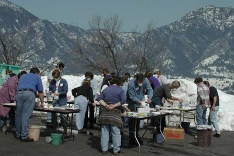
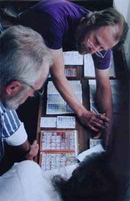

Workshops & Lectures
Workshops and Lectures are on hold until further notice, for health reasons.
Two-day Workshop
The systematic method developed by Ian Currie for studying glazes has proven a powerful tool for students of ceramics. The method is outlined in his books "Stoneware Glazes: A Systematic Approach", and "Revealing Glazes - Using the Grid Method" (Bootstrap Press).
Workshop Agenda
The workshop will take participants through the recipe-based grid method as outlined in "Revealing Glazes...". Being a recipe method, it is accessible to all regardless of their understanding of glaze chemistry. At the end of the first day students will have possibly 5 sets of glazes ( about 175 individual glazes) ready for firing, and will understand the basics of the method. The glazes will be fired overnight. On the second day there will be a Guided Tour of glazes illustrated by slides and/or computer projection. After lunch, the fired samples will be ready for inspection, and will illustrate many of the theoretical points made earlier. There are a number of other possible activities including slide lectures on Japanese pottery, wood firing and pottery in general, and more time to work one to one with students. There may also be time for some more practical work, extending on the results from the first day.

Discovering the Importance of Alumina and Silica
One of the problems with many other approaches to glaze research is a failure to emphasize the vital importance of alumina and silica variations in pinning down specific effects and discovering exciting new glazes. Systematic variation of alumina and silica, along with the fluxes, is central to this method, and is largely responsible for its success. The method is organized so that one is able to separate out the variables and therefore highlight cause and effect. It gives precise control and understanding of things like colour response, maturity, crazing, glaze surface phenomena such as matt-ness, shininess and orange-peel surface, as well as opalescence, opacity, colour-break phenomena etc. Another feature of the workshop is the use of "mass production" techniques to make and apply glazes quickly, and also cooperative division of labour sharing out the work between groups and sharing the results. A lot will be achieved in two days.
Lectures
Where a full two-day workshop is not convenient, it is possible to cover much of the same material with lectures. These are supported by visuals projected from a laptop or from slides, as well as fired samples. The lectures are proving very popular with groups that are not able to support a full 2-day workshop. There is much less organizing, and the content is enthusiastically received. Also, there is no need to limit the group size for the lectures.
Discovering How Glazes Work
The whole presentation, workshop and lectures, is very visual with a minimum of abstract theory, and yet it gives the depth of understanding usually associated with a more "technical" approach. In one lecture the participants are able to see and understand how glazes work, and where their own glazes fit into the scheme of things. They are also provided with the widest range of starting points for their own individual research.

Extending the Grid Method
For groups familiar with the Grid Method, in a 2-day workshop students can be taken to the next stage, choosing individual glazes from grids they have already done and fine tuning or developing them further. With a mixed group (from beginners to experienced) it is possible to include both.
Organize a Workshop in Your Area...
If you are interested in organizing a workshop in your area, e-mail us at [email protected] In North America, UK and Europe you can tie into one of his regular tours... organize one for your area if necessary. These workshops are for two days and involve firing and assessing the results.
We are in the process of organizing a series of workshops for northern Autumn of 2009, touring USA and Canada for about 6 weeks around August/September, and then Europe for a similar period around September/October. Dates will be firmed up later as preferences are indicated by organisers and as travel imperatives become clearer.
We are currently seeking expressions of interest. All that is needed at this stage is someone with e-mail who is willing to act as organiser.